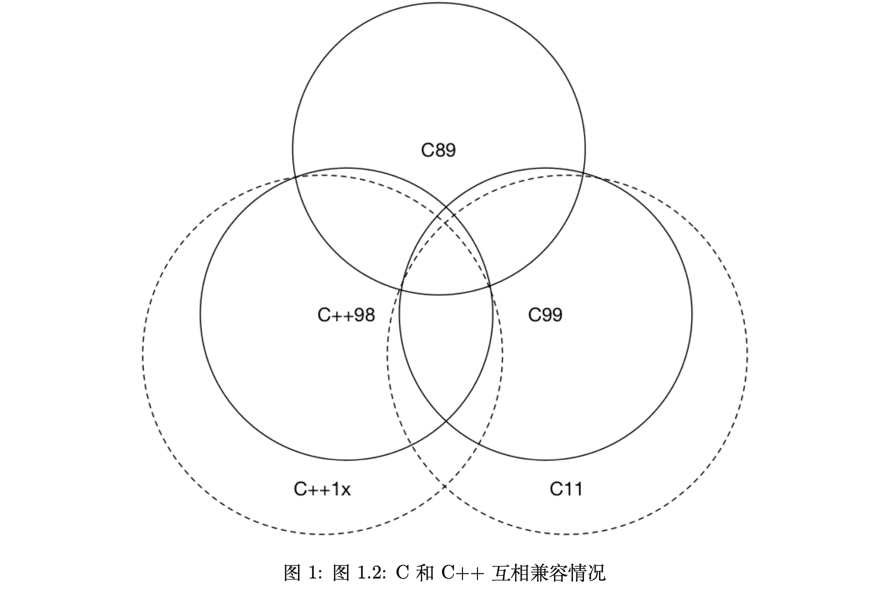

《现代 C++ 教程：高速上手 C++11/14/17/20》读书笔记
又一本知乎上推荐的 C++ 书籍，只有不到 100 页，因此可以用来花点时间快速查缺补漏一下。
一、迈向现代 C++
- （Page：8）自 C++11 以后被弃用的特性：
- 不再允许将字符串字面值常量赋值给一个
char*； - C++98 异常说明、unexpected_handler、set_unexpected() 等相关特性被弃用，应该使用 noexcept；
- auto_ptr 被弃用，应使用 unique_ptr；
- register 关键字被弃用，可以使用但不再具备任何实际含义；
- bool 类型的 “++” 操作被弃用；
- 如果一个类有析构函数，为其生成默认拷贝构造函数和拷贝赋值运算符的特性被弃用了；（存疑）
- C 语言风格的类型转换被弃用；
- C++17 中弃用部分原有的 C 标准库，<ccomplex>、<cstdalign>、<cstdbool> 与 <ctgmath> 等；
- C++11 提供的
std::bind和std::function。
- （Page：9）在不得不使用 C 时，应该注意使用
extern "C"这种特性，将 C 语言的代码与 C++ 代码进行分离编译，再统一链接这种做法。
// foo.h
#ifdef __cplusplus
extern "C" {
#endif
int add(int x, int y);
#ifdef __cplusplus
}
#endif// foo.c
int add(int x, int y) {
return x + y;
}// main.cc
#include "foo.h"
#include <iostream>
#include <functional>
int main(int argc, char **argv) {
// out 为一个自动推导的 const 引用.
[out = std::ref(std::cout << "Result from C code: " << add(1, 2))](){
out.get() << ".\n";
}();
return 0;
}- （Page：10）C 和 C++ 互相兼容情况：

二、语言可用性的强化
- （Page：10）语言可用性：指那些发生在运行时之前的语言行为。
- （Page：12）传统 C++ 会把 NULL、0 视为同一种东西，这取决于编译器如何定义 NULL，有些编译器会将 NULL 定义为
((void*)0)，有些则会直接将其定义为 0。而C++ 不允许直接将void*隐式转换到其他类型。 - （Page：12）
nullptr的类型为 nullptr_t，能够隐式转换为任何指针或成员指针的类型，也能和他们进行相等性上的比较。 - （Page：15）从 C++14 开始，constexpr 函数可以在内部使用局部变量、循环和分支等简单语句：
constexpr int fib(const int n) {
if (n == 1) return 1;
if (n == 2) return 1;
return fib(n - 1) + fib(n - 2);
}- （Page：16）C++17 消除了对 if/switch 变量声明位置（可以在结构内部声明）的限制：
std::vector<int> vec = {1, 2, 3, 4};
if (const std::vector<int>::iterator itr = std::find(vec.begin(), vec.end(), 3); itr != vec.end()) {
*itr = 4;
}- （Page：18）“列表初始化”与“结构化绑定”：
#include <iostream>
#include <tuple>
std::tuple<int, double, std::string> foo() {
return std::make_tuple(1, 2.3, "456");
}
int main(int argc, char** argv) {
auto [x, y, z] = foo();
std::cout << x << ", " << y << ", " << z << std::endl;
return 0;
}- （Page：18）自动类型推导：
auto arr = new auto(10); // arr -> int*.
template<typename T, typename U>
auto add(T x, U y) { // auto add(T x, U y) -> decltype(x + y) {.
return x + y;
}auto不能用于函数参数的类型推导（与重载冲突）。也不能用于数组类型的推导；decltype是为了解决 auto 关键字只能对变量进行类型推导的缺陷而出现的；decltype(auto)主要用于对转发函数或封装的返回类型进行推导（让 auto 以 decltype 的方式进行类型推导，并同时保留顶层 CV 标识符）。decltype 推导规则：- 如果 e 是一个没有带括号的标记符（一般为程序员自定义的标记）表达式或类成员访问表达式，则推导结果为 e 所命名的实体类型；
- 否则，若 e 的类型为 T，若 e 为将亡值 xvalue（一般为 std::move(x)；而字面量值通常为纯右值 prvalue），则推导结果为 T&&；
- 否则，若 e 的类型为 T，若 e 为一个左值（引用），则推导结果为 T&；
- 否则，若 e 的类型为 T，推导结果为 T；
std::string& foo();
decltype(auto) bar() {
return foo();
}- （Page：22）C++17 允许在代码中声明常量表达式（constexpr）判断条件：
template<typename T>
auto foo(const T& t) {
if constexpr (std::is_integral<T>::value) {
return t + 1;
} else {
return t + 0.001;
}
}- （Page：24）传统 C++ 中，模板只有在使用时才会被编译器实例化。换句话说，只要在每个“编译单元”中，编译的代码中遇到了被完整引用的模板，都会进行实例化，而重复实例化便会导致编译时间的增加。对于这个问题可以通过“外部模板”来解决（缩短编译时间，减小中间 “.o” 文件的大小）。
extern template class std::vector<double>;- （Page：25）模板是用来产生类型的。
typedef仅能用来定义类型，而无法定义模板别名。这里使用using便可以做到“模板别名”：
template<typename T>
using Foo = Bar<std::vector<T>, std::string>- （Page：26）默认模板参数：
template<typename T = int, typename U = int>
auto add(T x, U y) {
return x + y;
}- （Page：26）变长模板参数：
- 普通递归模板展开：
template<typename T>
void foo(T arg) {
std::cout << arg << std::endl;
}
template<typename T, typename... Ts>
void foo(T arg, Ts... args) {
std::cout << arg << std::endl;
foo(args...);
}
- C++17 参数模板展开：利用
constexpr进行编译时的模板条件展开。
template<typename T, typename... Ts>
void foo(T arg, Ts... args) {
std::cout << arg << std::endl;
if constexpr (sizeof...(args) > 0) foo(args...);
}- 初始化列表展开：通过初始化列表，
(lambda, value)...将会被展开。由于逗号表达式的出现，首先会执行前面的 lambda 表达式，完成参数的输出。
template<typename T, typename... Ts>
void foo(T arg, Ts... args) {
std::cout << arg << std::endl;
(void) std::initializer_list<T>{
([&args]{
std::cout << args << std::endl;
}(), arg)...
};
}- C++17 通过折叠表达式（可代替上述“初始化列表”）：
template<typename... Ts>
void foo(Ts... args) {
auto _t = [](auto arg) {
std::cout << arg << std::endl;
};
(_t(args), ...); // comma expression.
}- （Page：28）非类型模板参数：
template<auto size>
void foo() {
int arr[size] = {};
std::cout << (sizeof(arr) / sizeof(int)) << std::endl;
}
int main(int argc, char** argv) {
foo<10>();
return 0;
}- C++17 可以使用
auto来辅助完成对字面量值类型（“size”）的推导过程；
- （Page：29）委托构造：
class A {
public:
int v;
A() = default;
A(int x) : A() { // 委托另一个构造函数；
v = x;
}
};- （Page：30）继承构造：
class A {
public:
int v;
A() = default;
A(int x) : A() { v = x; }
};
class B : A {
public:
using A::A; // 继承基类的构造函数；
};- （Page：31）
fianl关键字：防止类被继续继承以及终止虚函数继续重载。override关键字：显式告知编译器进行重载，防止错误重载的发生。
class A final {
virtual void foo() final {
std::cout << "A" << std::endl;
}
};- （Page：32）
=default与=delete：
struct A {
A() = default;
A& operator=(const A&) = delete;
};三、语言运行期的强化
- （Page：34）Lambda 表达式：唯一需要注意的是，Lambda 表达式的“值拷贝”是在定义时拷贝的。C++14 允许捕获的成员用任意的表达式进行初始化，被声明的捕获变量类型会根据表达式进行判断。
int main(int argc, char** argv) {
auto x = std::make_unique<int>(1);
auto y = [v = std::move(x)]() { // “v” 使用表达式进行初始化；
return *v + 10;
};
std::cout << y() << std::endl;
}- C++14 Lambda 泛型：
auto add = [](auto x, auto y) {
return x + y;
}- （Page：36）当 Lambda 表达式的捕获列表为空时，闭包对象还能够转换为函数指针进行传递。C++11 中所有“可调用对象”都可以通过
std::function进行表示，并且可以同std::bind一起使用来绑定部分参数。 - （Page：40）“常量左值引用”为万能引用类型，可以引用任何类型的右值。而常量左值引用允许绑定到右值则源于 Fortran 的需要。
- （Page：43）引用折叠：对一个引用类型继续进行引用。无论模板参数是什么类型的引用，当且仅当实参类型为右引用时，模板参数才能被推导为右引用类型。
- 完美转发：使用
std::forward来保持参数传递后的“右值性”； - 在使用循环语句的过程中，
auto&&是最安全的方式（当 auto 被推导为不同的左右引用时，与 && 的引用折叠组合是完美转发）；
int main(int argc, char** argv) {
std::vector<int> v{1, 2, 3};
for (auto&& i : v) { // int&.
std::cout << i << std::endl;
}
}std::move与std::forward的简单实现：
// std::forward 的简单实现；
template<typename T>
T&& forward(std::remove_reference_t<T>& param) {
return static_cast<T&&>(param);
}
// std::move 的简单实现；
template<typename T>
std::remove_reference_t<T>&& move(T&& t) {
return static_cast<std::remove_reference_t<T>&&>(t);
}四、容器
- （Page：47）同传统数组一样，
std::array的数组大小参数也必须是常量表达式：
constexpr int len = 4;
std::array<int, len> = {1, 2, 3, 4};- （Page：48）C++ 中的有序容器
std::map与std::set，这些元素内部通过红黑树进行实现，元素插入和搜索的平均复杂度均为 “O(log(size))”。而对应的无序容器则使用“Hash 表”实现，对应的操作复杂度为常数级。 - （Page：51）C++17 运行时遍历
std::tuple：
int main() {
std::tuple t{42, 'a', 4.2};
std::apply(
[](auto&&... args) { // 参数为该 Tuple 的所有元素；
((std::cout << args << '\n'), ...);
}, t);
}五、智能指针与内存管理
- （Page：54）C++11 为什么没有提供
std::make_unique？Herb Sutter 答：“被他们忘记了”。
六、正则表达式
（略）
七、并行与并发
- （Page：62）
std::thread用于创建一个执行的线程实例：
#include <thread>
int main() {
std::thread t([](){
std::cout << "Hello, world!" << std::endl;
});
t.join();
return 0;
}（其他略，暂时用不到）